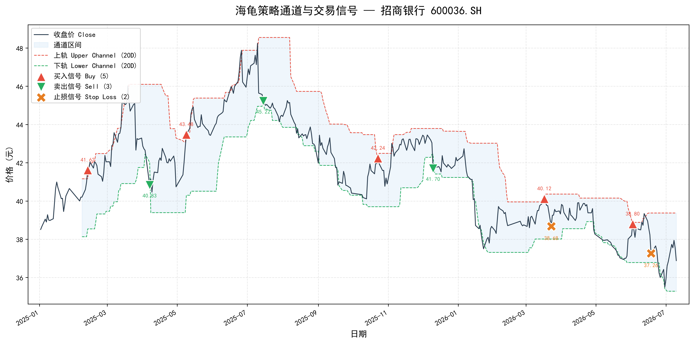
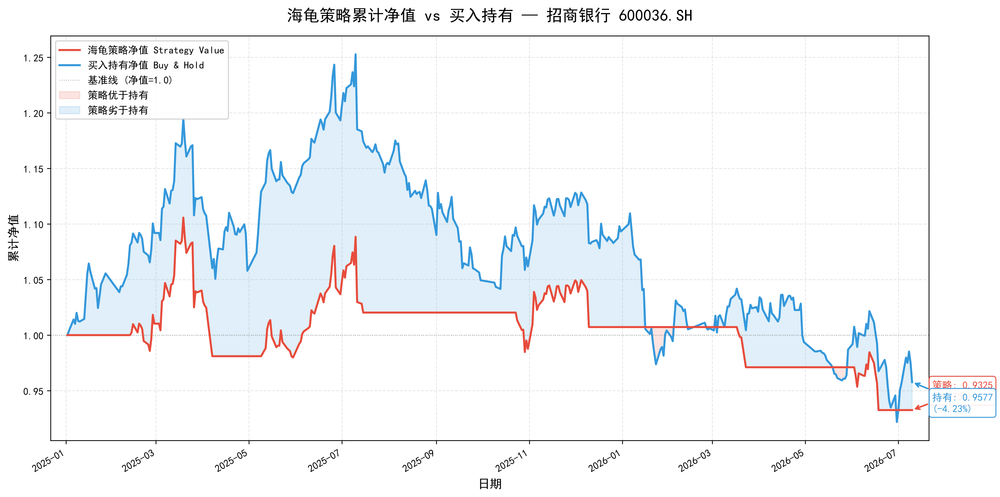
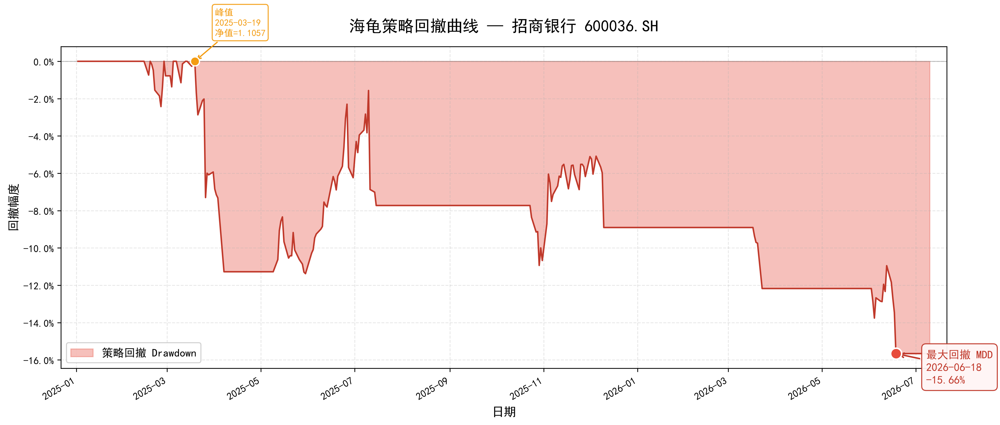
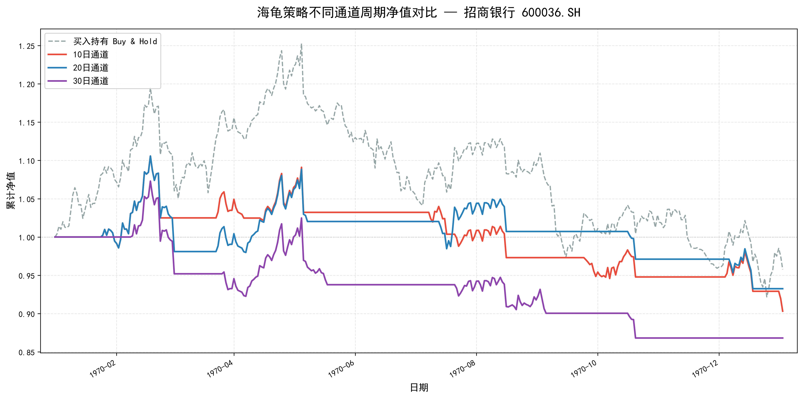

Turtle Trading Backtest
经典海龟交易法回测：20 日通道突破 + 2 倍 ATR 止损
策略累计回报
-6.75%
买入持有回报
-4.23%
最大回撤 MDD
-15.66%
夏普比率
-0.32
交易次数
5 次
止损次数
2 次
图1：20 日通道与买卖/止损信号

图2：策略累计净值 vs 买入持有净值

图3：策略回撤曲线与最大回撤

图4：不同通道周期参数对比

参数对比表
| 通道周期 | 累计回报 | 最大回撤 | 夏普比率 | 交易次数 | 止损次数 |
|---|---|---|---|---|---|
| 10 日 | -9.68% | -18.32% | -0.52 | 8 | 0 |
| 20 日 | -6.75% | -15.66% | -0.32 | 5 | 2 |
| 30 日 | -13.19% | -19.09% | -0.80 | 4 | 3 |
海龟策略回测结论
本次回测基于招商银行 600036.SH 2025 年 1 月 2 日至 2026 年 7 月 10 日共 367 个交易日的日线数据，
复现了经典海龟交易系统。策略使用 20 日高低点通道作为入场和出场条件，以 2 倍 ATR 作为止损保护。
所有信号计算均使用 shift(1) 避免未来函数，即今天的突破判断基于过去 20 日数据，不包含今天自身的价格。
回测期间，招商银行整体处于下行通道，策略累计回报为 -6.75%，买入持有回报为 -4.23%， 策略在绝对收益上略逊于买入持有。但策略的最大回撤（-15.66%）显著低于买入持有（-26.41%）， 年化波动率（12.62%）也低于买入持有（18.27%）。这说明海龟策略在控制下行风险方面发挥了作用。
参数对比显示，20 日通道在本段行情中综合表现最优：10 日通道交易过于频繁（8 次）且未触发止损， 30 日通道信号滞后导致止损率过高（3/4 笔）。20 日通道在交易频率、回撤控制和夏普比率之间取得了相对平衡。
关键提示：海龟策略在趋势明显的行情中表现较好，在震荡或下行趋势中可能产生假突破。止损机制是控制风险的核心，参数回测是策略优化的重要步骤。